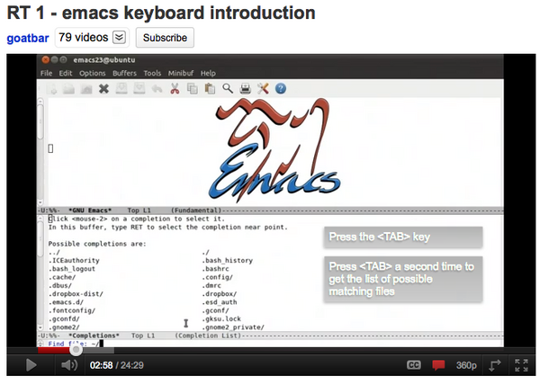
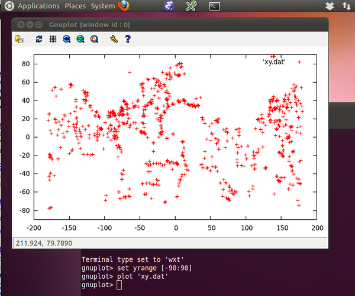
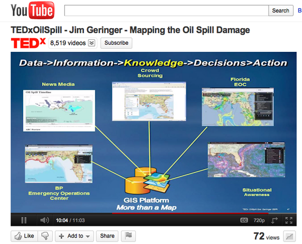
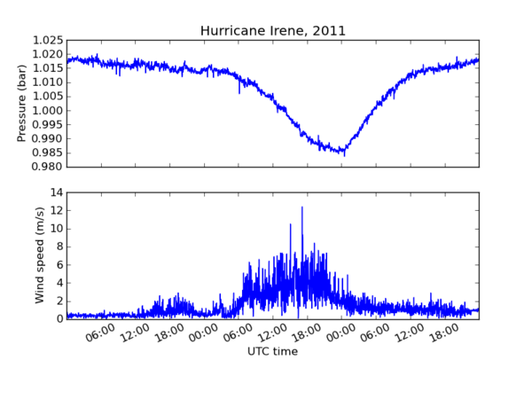

09.30.2011 07:59
Research Tools Lecture 10 - QGIS, bash script and ipython
Lecture 10 for research tools does a
quick demo of QGIS, uses the for loop and shell variable in bash to
make an animated gif of the USCG Ice Breaker Healy in Dutch Harbor,
AK, and does a first look at ipython.
Lecture notes: 10-qgis-bash-python.html and 10-qgis-bash-python.org
screen shots from the lecture [pdf]
Class audio podcast [mp3]
Video 5 - The bash shell part 1 - Introduction:
Lecture notes: 10-qgis-bash-python.html and 10-qgis-bash-python.org
screen shots from the lecture [pdf]
Class audio podcast [mp3]
Video 5 - The bash shell part 1 - Introduction:
09.30.2011 07:35
RSS for data transfers
Webb Pinner has a neat article:
Using RSS to Monitor
Data Transfers [oceandatarat.org] It's fun to see him rocking
bash shell scripting for the NOAA ship Okeanos Explorer.
ODR_RsyncLog2RSS.sh
Thanks to Art for pointing me to this blog post. I've been long talking to people that we need services that people can subscribe to for notices that data has landed somewhere in a system. e.g. a small report that there is new multibeam file collected on the ship. We can then pre-allocated processing and storage requirements. That should then be followed up with a notice that the data has landed at the national archives along with the URL and checksums for that data. I can then ingest that data into our systems. RSS is one possible such delivery mechanism, but can't exist on it's own. Really, we need GeoRSS, message passing systems such as XMPP/Jabber, IRC bot, AMQP, DDS, java message bus "thingies" etc., and multiple ways to get the data that include http and more importantly peer-to-peer bittorrent delivery. Imagine a global system of established bittorrent data providers for science data that have a couple copies per continent. A research ship could torrent export the multibeam data when it hit the internet anywhere in the world and it would gradually make its way to world. Having all of NOAA's multibeam at your site really isn't much of an IT feat these days. A small server can easily have 30+ TB of USB drive storage for very little investment. And with this system, a drive failure isn't a bit deal as the site can just re-torrent the data with confidence as long as we know that there is a rigorous master archive.
Imagine a research ship pulling in to Alaska.... say the USCGC Healy, which just pulled into Dutch Harbor. A local torrent node would likely pull most of the multibeam raw data in a day or two via the islands local network. While the research team is flying back to their institutions with their own copy of the data, it's already trickling over the backbones and sat links to all the nodes and the national archive. When the researchers make it to their home institution with higher speed networking, they locally torrent the data to their torrent node and that will sync anything not already archived by the system over the slow links from AK.
If you can watch the whole process as an end user, you get data at the earliest possible time (it could even come over the ship VSAT if there was excess bandwidth). And you can watch the progress with little effort.
The fact that we are still primarily using disk drives in this country to transfer data under a TB seems ridiculous. He have some seriously fat pipes available for government and research. In fact, I've gotten in trouble for not using some of our backup pipes, so I've written cron jobs to sit around all night sending random 1-2GB chunks of data back and forth over the backbones to make the bean counters happy. And they have no idea what I'm sending over an encrypted scp copy. Nothing like quiet fiber to push bucket loads of data around the country.
Will the Rollingdeck to Repository (r2r) achieve this vision? I will have a lot to talk to people about at AGU this year.
I have a feeling that managers are never going to buy into bittorrent, but this is what bittorrent was made for!
ODR_RsyncLog2RSS.sh
Thanks to Art for pointing me to this blog post. I've been long talking to people that we need services that people can subscribe to for notices that data has landed somewhere in a system. e.g. a small report that there is new multibeam file collected on the ship. We can then pre-allocated processing and storage requirements. That should then be followed up with a notice that the data has landed at the national archives along with the URL and checksums for that data. I can then ingest that data into our systems. RSS is one possible such delivery mechanism, but can't exist on it's own. Really, we need GeoRSS, message passing systems such as XMPP/Jabber, IRC bot, AMQP, DDS, java message bus "thingies" etc., and multiple ways to get the data that include http and more importantly peer-to-peer bittorrent delivery. Imagine a global system of established bittorrent data providers for science data that have a couple copies per continent. A research ship could torrent export the multibeam data when it hit the internet anywhere in the world and it would gradually make its way to world. Having all of NOAA's multibeam at your site really isn't much of an IT feat these days. A small server can easily have 30+ TB of USB drive storage for very little investment. And with this system, a drive failure isn't a bit deal as the site can just re-torrent the data with confidence as long as we know that there is a rigorous master archive.
Imagine a research ship pulling in to Alaska.... say the USCGC Healy, which just pulled into Dutch Harbor. A local torrent node would likely pull most of the multibeam raw data in a day or two via the islands local network. While the research team is flying back to their institutions with their own copy of the data, it's already trickling over the backbones and sat links to all the nodes and the national archive. When the researchers make it to their home institution with higher speed networking, they locally torrent the data to their torrent node and that will sync anything not already archived by the system over the slow links from AK.
If you can watch the whole process as an end user, you get data at the earliest possible time (it could even come over the ship VSAT if there was excess bandwidth). And you can watch the progress with little effort.
The fact that we are still primarily using disk drives in this country to transfer data under a TB seems ridiculous. He have some seriously fat pipes available for government and research. In fact, I've gotten in trouble for not using some of our backup pipes, so I've written cron jobs to sit around all night sending random 1-2GB chunks of data back and forth over the backbones to make the bean counters happy. And they have no idea what I'm sending over an encrypted scp copy. Nothing like quiet fiber to push bucket loads of data around the country.
Will the Rollingdeck to Repository (r2r) achieve this vision? I will have a lot to talk to people about at AGU this year.
I have a feeling that managers are never going to buy into bittorrent, but this is what bittorrent was made for!
09.28.2011 12:12
More research tools material - video 4 and lecture 9 audio
I have the audio podcast for lecture
9, where we use org-babel to do shell scripting. We just make it to
using Google Earth for the first time.
9-babel-bash-scripting.mp3
The lecture notes are available here:
9-bash-scripting.html and 9-bash-scripting.org
I also put out a shorter video 4 on emacs:
9-babel-bash-scripting.mp3
The lecture notes are available here:
9-bash-scripting.html and 9-bash-scripting.org
I also put out a shorter video 4 on emacs:
09.27.2011 16:16
Badly behaved growl
I've seen Guide (mr python) notice
that his Growl instance was claim 18G of virtual memory. I didn't
register that I could be having the same thing, but there it is
with "top -o vsize":
What is the deal with growl?
Processes: 111 total, 3 running, 2 stuck, 106 sleeping, 483 threads 16:09:01 Load Avg: 0.72, 0.75, 0.85 CPU usage: 4.28% user, 4.28% sys, 91.42% idle SharedLibs: 12M resident, 5416K data, 0B linkedit. MemRegions: 18495 total, 767M resident, 36M private, 1451M shared. PhysMem: 1675M wired, 1563M active, 697M inactive, 3934M used, 94M free. VM: 265G vsize, 1122M framework vsize, 11277490(0) pageins, 3700141(0) pageouts. Networks: packets: 14670614/17G in, 8430222/1812M out. Disks: 7513249/172G read, 4825603/165G written. PID COMMAND %CPU TIME #TH #WQ #PORT #MREG RPRVT RSHRD RSIZE VPRVT VSIZE PGRP PPID STATE UID FAULTS 239 GrowlMenu 0.0 00:08.56 2 1 89 263 15M 7412K 14M 335M 18G 239 174 sleeping 502 83440 0 kernel_task 7.4 03:01:19 67/5 0 2 608 77M 0B 444M- 82M 5092M 0 0 running 0 3857713 20 fseventsd 0.0 04:43.62 57 1 248 174 5536K 216K 9464K 1419M 3780M 20 1 sleeping 0 4233810+ 82531 Mail 0.0 00:28.93 9 2 404 857 73M 48M 152M 229M 3689M 82531 174 sleeping 502 82749 81718 vmware-vmx 2.0 17:24.72 23 1 285 436 27M 16M 1175M+ 70M 3658M 81718 1 sleeping 0 1056463+ 81852 Colloquy 0.0 00:15.89 7 2 265 346 19M 18M 39M 170M 3529M 81852 174 sleeping 502 58575 14968 DashboardCli 2.0 03:04.13 6 2 141 198 11M 6200K 14M 206M 3504M 191 191 sleeping 502 118010 2855 firefox-bin 2.5 04:07.14 26 1 241 1042 183M 52M 338M 263M 3449M 2855 174 sleeping 502 316601 62 mds 0.1 26:12.09 7 5 170- 286 62M- 8404K 75M- 659M 3110M 62 1 sleeping 0 9675687+ ...The laptop has been up for 15 days.
What is the deal with growl?
09.25.2011 21:58
Research Tools Video 3 - Emacs Part 3 - org-mode
I've now created a playlist for the
2011 Research Tools videos: 2011
Research Tools YouTube playlist
In part 3 of my series on emacs, I walk through the basics of org-mode - a tools for outlining, writing, programming, and doing repeatable research. org-babel inside of org-mode allows code from a large number of programming languages to be written and run inside of an org mode file.
However, this video does not cover many useful features that are available. Of significant note are the agenda functions for scheduling and tracking tasks.
This video is for the 2011 Research Tools (ESCI 895-03) course at the University of New Hampshire in the Center for Coastal and Ocean Mapping (CCOM) / NOAA Joint Hydrographic Center (JHC).
You might also want to watch this Google TechTalk by Carsten Dominik: Google TechTalk: Carsten Dominik. There is also a FLOSS Weekly where Randal Schwartz interviews Carsten about org-mode: FLOSS Weekly 136: Emacs Org-Mode
In part 3 of my series on emacs, I walk through the basics of org-mode - a tools for outlining, writing, programming, and doing repeatable research. org-babel inside of org-mode allows code from a large number of programming languages to be written and run inside of an org mode file.
However, this video does not cover many useful features that are available. Of significant note are the agenda functions for scheduling and tracking tasks.
This video is for the 2011 Research Tools (ESCI 895-03) course at the University of New Hampshire in the Center for Coastal and Ocean Mapping (CCOM) / NOAA Joint Hydrographic Center (JHC).
You might also want to watch this Google TechTalk by Carsten Dominik: Google TechTalk: Carsten Dominik. There is also a FLOSS Weekly where Randal Schwartz interviews Carsten about org-mode: FLOSS Weekly 136: Emacs Org-Mode
09.25.2011 17:46
Research Tools Video 2 - Emacs part 2
Part 2 of my emacs video for research
tools... directory
edit (dired) mode, M-x
shell, additional text manipulations (ispell, capitalization,
M-x replace-string), M-x
grep, speedbar, and
erc for irc, and
creating very simple scripts. Today was my first day using the erc
chat client for IRC. Thanks to Ben
Smith for reminding me to try erc.
09.24.2011 16:54
Research Tools Video 1 - Intro to Emacs Keyboard
I finally got to sit down at they
keyboard and record a video that goes through some of the basic
keystrokes of using emacs (without the mouse). I couldn't find any
introduction to emacs videos that I really liked, so I tried my
hand. I am not totally satisfied with this video, but I hope it is
useful. Feel free to add comments. It's a bit long at 24 minutes,
but it takes a while to go through even the basics.
YouTube has some really awesome annotation tools now for videos. I will be trying to add more annotations as I get a chance.
YouTube has some really awesome annotation tools now for videos. I will be trying to add more annotations as I get a chance.

09.24.2011 11:39
Adding screen captures to an org-mode buffer in emacs
This doesn't look like much, but
hopefully, this will cause me to do a much better job of taking
notes in my org-mode log. It took too much time to add figures
before I did this, so I put screen shots into my work log. I took a
lot of screenshots, but they just get bulk dumped into iPhoto on
which ever particular machine I happen to be on at the moment. Not
good!
Yesterday, Monica pointed me to org-mode worg (wiki org) Org ad hoc code, quick hacks and workarounds page, which has a section called "Automatic screenshot insertion" created by Russell Adams. He uses the imagemagick/graphicsmagick import command to capture a window.
I then took a look at the Mac OSX screencapture tool. That works pretty good. I was confused by the "-T seconds" option until I realized that the delay time comes after you select a region if you are using the "-i" mode for interactive selection of a region.
I then got stuck on trying to write out the screenshots in a place that I want. I keep a directory under my worklogs that is the year. In that go each of my screenshots in a MMDD-some-name.png. I wanted to default the some-name section to be HHMMSS. That way, if I just need to keep moving, I don't have to think of a name and I will not have collisions with the day. This part took me a some serious head scratching. emacs lisp doesn't seem to follow quite the same throught process as I go through. I read a number of pages:
Here is my final code that works for me:
StackOverflow also came through for me on a number of recent questions. For org-mode last week, I couldn't figure out how to put org-mode examples into my class lecture notes: Escaping org-mode example block inside of an example block. This is the example that ended up working for me. I use a source block with the contents escaped. I then edit the block with C-' aka M-x org-edit-special.
Yesterday, Monica pointed me to org-mode worg (wiki org) Org ad hoc code, quick hacks and workarounds page, which has a section called "Automatic screenshot insertion" created by Russell Adams. He uses the imagemagick/graphicsmagick import command to capture a window.
(defun my-org-screenshot ()
"Take a screenshot into a time stamped unique-named file in the
same directory as the org-buffer and insert a link to this file."
(interactive)
(setq filename
(concat
(make-temp-name
(concat (buffer-file-name)
"_"
(format-time-string "%Y%m%d_%H%M%S_")) ) ".png"))
(call-process "import" nil nil nil filename)
(insert (concat "[[" filename "]]"))
(org-display-inline-images))
I tried playing with this on the mac was a bit confused until I
realized that import only captures X11 windows. So my attempts to
add "-window root" to import really did not help much.I then took a look at the Mac OSX screencapture tool. That works pretty good. I was confused by the "-T seconds" option until I realized that the delay time comes after you select a region if you are using the "-i" mode for interactive selection of a region.
I then got stuck on trying to write out the screenshots in a place that I want. I keep a directory under my worklogs that is the year. In that go each of my screenshots in a MMDD-some-name.png. I wanted to default the some-name section to be HHMMSS. That way, if I just need to keep moving, I don't have to think of a name and I will not have collisions with the day. This part took me a some serious head scratching. emacs lisp doesn't seem to follow quite the same throught process as I go through. I read a number of pages:
- 3.4 Different Options for interactive
- 21.2.2 Code Characters for interactive
- Emacs Elisp dynamic interactive prompt
- How can I set a default path for interactive directory selection to start with in a elisp defun?
Here is my final code that works for me:
; Mac OSX version. Tested on 10.7. Will not work on other OSes.
(defun my-org-screenshot (filename)
(interactive
( list
(read-file-name "What file to write the PNG to? "
(format-time-string "%Y/%m%d-%H%M%S.png")
(format-time-string "%Y/%m%d-%H%M%S.png")
))
)
(message "Starting screencapture of %s" filename)
(call-process "screencapture" nil nil nil "-i" filename)
(insert (concat "[[" filename "]]\n\n"))
)
There are lots of features that would be nice to have that I will
not get to. I'd like to be able to specify the delay time for
things where I want to catch the process (e.g. menu options). I
would like to be able to set the final width in pixels. And if I
could switch to jpeg or gif when I know that would be better.StackOverflow also came through for me on a number of recent questions. For org-mode last week, I couldn't figure out how to put org-mode examples into my class lecture notes: Escaping org-mode example block inside of an example block. This is the example that ended up working for me. I use a source block with the contents escaped. I then edit the block with C-' aka M-x org-edit-special.
#+begin_src org ,#+BEGIN_EXAMPLE ,* This is a heading ,#+END_EXAMPLE #+end_srcMonica has also started using StackOverflow and got help on emacs org-mode: Color of date tag in org-mode publish to HTML and boxes around text
#+STYLE: <style type="text/css"> .timestamp { color: purple; font-weight: bold; }</style>
This does a nice job of bringing the timestamps out from their
obscure grey past.09.23.2011 14:54
Research Tools Lecture 8 - Emacs and shell commands
I'm having trouble with naming
lectures. So I appologize that the names are different. This class
covered a lot of emacs commands using the keyboard and we plot
Ocean Drilling Program hole locations from a comma separated value
(CSV) file using GNU Plot. Note that we will be using matplotlib
(and not gnuplot) after this class.
Lecture Notes: 8-more-emacs-and-script-files.html and 8-more-emacs-and-script-files.org.
- 8-more-emacs.mp3 (27M)
- 8-more-emacs.m4a (19M)
- 8-more-emacs.ogg (20M)
Lecture Notes: 8-more-emacs-and-script-files.html and 8-more-emacs-and-script-files.org.

09.23.2011 12:58
GIS for Deepwater Horizon at TEDxOilSpill
If wikipedia is right, Jim Geringer is at
ESRI as director of policy and public sector strategies. What is
this ESRI software for Deepwater Horizon? I've never seen a lot of
this stuff. 7 minutes in is the CCOM Flow Vis WMS data, but nothing
mentioning ERMA, GeoPlatform, etc. He shows AIS without explaining
where the ship locations were coming from (I have no idea).
The YouTube TEDxOilSpill playlist.
The YouTube TEDxOilSpill playlist.

09.23.2011 10:18
Kongsberg Seismic Streamer in AIS
In the land of no really actual
information... I can not tell based on the press release what
Kongsberg is actual doing. There is actually a message already in
the standards that can cover this... the area notice in
IMO Circ 289 (PDF). I don't think we have a code for a seismic
streamer, but you could easily add one or use:
Innovative new KONGSBERG solution displays Seismic Streamers over AIS
And does this solution work for sea tows where there is a long cable between the tug and the tow? Those things really scare me with a long line between two separate vessels that is waiting to "clothes line" an unobservant ship.
13. Caution Area: Survey operations 20. Caution Area: define in TextI really hate press releases that don't link to any actual technical information!
Innovative new KONGSBERG solution displays Seismic Streamers over AIS
... Kongsberg Seatex has developed an AIS solution to address this challenge. By utilizing AIS technology, the vessel can broadcast its coordinates in the area where the vessel actually operates, together with the size and shape of the actual streamer spread. A key element in this concept is that only AIS standard compliant functions are utilized so that the vessel and spread will be visible on AIS-compatible ECDIS displays aboard surrounding vessels. ...So what? Are they going to put a bunch of oversized ghost ships on peoples' displays to represent the streamer area? Or a line of small ghost ships around the border? That would be a really really BAD (TM) idea. If you expect to see vessels out the window based on your chart and instead you see nothing because there are streamers in the water, it is an accident waiting to happen.
And does this solution work for sea tows where there is a long cable between the tug and the tow? Those things really scare me with a long line between two separate vessels that is waiting to "clothes line" an unobservant ship.
09.22.2011 05:56
Capturing the screen for lecture
I would like to capture the screen
inside the Ubuntu Virtual Machine while I am teaching Research
Tools. I have Quicktime and iShowU HD, but neither of those
seems like a great solution. In the past, I have used x windows
dump (xwd) to save Linux X11 screens to a xwd formatted file. I
tried to find a nicer option - something like zScreen on windows
(which is seriously awesome). But I had no luck finding a good
timed screen grab tool for Linux with the time I have, so I checked
out the ImageMagick import command.
I've never intentionally used it before. I have run into it many
times when forgetting to put "#!/usr/bin/env python" at the
beginning of python scripts that then try to "import" some module.
I would sit there wondering why my script was taking so long only
to notice the mouse cursor had switched to a "+".
If I give the import command a "-window root" option, it will quickly grab the whole screen, write the file and exit. We shall see how this does during lecture today when running in the Ubuntu virtual machine.
If I give the import command a "-window root" option, it will quickly grab the whole screen, write the file and exit. We shall see how this does during lecture today when running in the Ubuntu virtual machine.
#!/bin/bash
while [ true ]
do
echo $(date +%H%M%S).png
import -window root $(date +%H%M%S).png
sleep 10
done
09.21.2011 07:47
Research Tools Lecture 7 - emacs and org-mode
In lecture 7, we go over Ubuntu web man pages, Safari Books
Online, Emacs, and
Org Mode
Lecture notes:
7-emacs-and-org-mode.html or
7-emacs-and-org-mode.org
09.19.2011 16:34
Lecture 6 - KeyPassX and Dropbox
Lecture 6 of
Research Tools goes through KeyPassX for generating and storing
unique passwords for every website, service, and computer that
needs a password. We then setup dropbox on the virtual machine to
share files between the virtual machine and every other computer
that you will use. By using an encrypted file in dropbox, we can
safely store our passwords in dropbox, which you should consider
not very secure.
Lecture notes:
6-keypassx-dropbox.html
09.19.2011 14:41
NOAA VDatum
It is exciting that NOAA has finished
the first pass at VDatum, but it is a bummer that the source code
is not available. I saw a news article implying that the source
code was available, but couldn't find anything on the NOAA site. I
grabbed the latest zip from http://vdatum.noaa.gov/download/software/
and gave a look to see if I was just missing something.
Without the source being public, I'm not going to bother packaging the software (or doing anything else with it). A very big bummer.
I was talking to Frank Warmerdam a while ago and he said that he's actually done some worth with vdatam (not meaning the NOAA Java Source Code). I finally looked it up: http://trac.osgeo.org/proj/wiki/VerticalDatums
wget http://vdatum.noaa.gov/download/software/VDatum30b1.zip unzip VDatum30b1.zip unzip NGSDatumUtil.jar du -h gov 20K gov/noaa/vdatum/plugin 28K gov/noaa/vdatum/prefs 16K gov/noaa/vdatum/referencing/igld85 60K gov/noaa/vdatum/referencing/stateplane 176K gov/noaa/vdatum/referencing 20K gov/noaa/vdatum/resources 64K gov/noaa/vdatum/tidalarea 160K gov/noaa/vdatum/transgrid/utils 212K gov/noaa/vdatum/transgrid 772K gov/noaa/vdatum 772K gov/noaa 772K gov s -l gov/noaa/vdatum/ total 504 -rw-r--r-- 1 schwehr staff 4453 Apr 1 17:13 Console$ASCIITransform.class -rw-r--r-- 1 schwehr staff 18331 Apr 1 17:13 Console.class -rw-r--r-- 1 schwehr staff 3896 Apr 1 17:13 DatumRegistry.class -rw-r--r-- 1 schwehr staff 3649 Apr 1 17:13 Disclaimers.class -rw-r--r-- 1 schwehr staff 2708 Apr 1 17:13 NewClass.class -rw-r--r-- 1 schwehr staff 802 Apr 1 17:13 ProgressBar$1.class -rw-r--r-- 1 schwehr staff 801 Apr 1 17:13 ProgressBar$2.class -rw-r--r-- 1 schwehr staff 7108 Apr 1 17:13 ProgressBar.class -rw-r--r-- 1 schwehr staff 201 Apr 1 17:13 VDatum$1.class -rw-r--r-- 1 schwehr staff 1922 Apr 1 17:13 VDatum$WorkFolderGetter.class -rw-r--r-- 1 schwehr staff 10055 Apr 1 17:13 VDatum.class -rw-r--r-- 1 schwehr staff 2767 Apr 1 17:13 VDatum_CMD.class -rw-r--r-- 1 schwehr staff 794 Apr 1 17:13 VDatum_GUI$1.class -rw-r--r-- 1 schwehr staff 796 Apr 1 17:13 VDatum_GUI$10.class ... find . -name \*.class | grep -v '\$' | tail ./gov/noaa/vdatum/transgrid/TransgridGTS.class ./gov/noaa/vdatum/transgrid/TransgridGTX.class ./gov/noaa/vdatum/transgrid/TransgridUtils.class ./gov/noaa/vdatum/transgrid/utils/TransgridFilter.class ./gov/noaa/vdatum/transgrid/utils/TransgridImX.class ./gov/noaa/vdatum/transgrid/utils/TransgridImXport.class ./gov/noaa/vdatum/transgrid/utils/TransgridInfo.class ./gov/noaa/vdatum/VDatum.class ./gov/noaa/vdatum/VDatum_CMD.class ./gov/noaa/vdatum/VDatum_GUI.classThat gave me some file names to search on. e.g. http://www.google.com/search?q="TransgridGTX.java" , but nothing.
Without the source being public, I'm not going to bother packaging the software (or doing anything else with it). A very big bummer.
I was talking to Frank Warmerdam a while ago and he said that he's actually done some worth with vdatam (not meaning the NOAA Java Source Code). I finally looked it up: http://trac.osgeo.org/proj/wiki/VerticalDatums
09.17.2011 10:15
Fall AGU poster Global Coastal and Marine Spatial Planning (CMSP) from Space Based AIS Ship Tracking
I just got the email saying that our
fall AGU poster has been accepted for a Monday morning poster
session. I've never had the starting slot before.
http://vislab-ccom.unh.edu/~schwehr/papers/2011-agu/
http://vislab-ccom.unh.edu/~schwehr/papers/2011-agu/
TIME: Monday, 8:00-12:20AM, Dec 5, 2011 PAPER NUMBER: IN11B-1278 TITLE: Global Coastal and Marine Spatial Planning (CMSP) from Space Based AIS Ship Tracking AUTHORS: Kurt D Schwehr (1, 2) Jenifer Austin Foulkes (2) Dino Lorenzini and Mark Kanawati (3) INSTITUTIONS: 1. CCOM 24 Colovos Road, Univ. of New Hampshire, Durham, NH 2. Google, Mountain View, CA 3. SpaceQuest, Fairfax, VA All nations need to be developing long term integrated strategies for how to use and preserve our natural resources. As a part of these strategies, we must evalutate how communities of users react to changes in rules and regulations of ocean use. Global characterization of the vessel traffic on our Earth's oceans is essential to understanding the existing uses to develop international Coast and Marine Spatial Planning (CMSP). Ship traffic within 100-200km is beginning to be effectively covered in low latitudes by ground based receivers collecting position reports from the maritime Automatic Identification System (AIS). Unfortunately, remote islands, high latitudes, and open ocean Marine Protected Areas (MPA) are not covered by these ground systems. Deploying enough autonomous airborne (UAV) and surface (USV) vessels and buoys to provide adequate coverage is a difficult task. While the individual device costs are plummeting, a large fleet of AIS receivers is expensive to maintain. The global AIS coverage from SpaceQuestââǬâÑ¢s low Earth orbit satellite receivers combined with the visualization and data storage infrastructure of Google (e.g. Maps, Earth, and Fusion Tables) provide a platform that enables researchers and resource managers to begin answer the question of how ocean resources are being utilized. Near real-time vessel traffic data will allow managers of marine resources to understand how changes to education, enforcement, rules, and regulations alter usage and compliance patterns. We will demonstrate the potential for this system using a sample SpaceQuest data set processed with libais which stores the results in a Fusion Table. From there, the data is imported to PyKML and visualized in Google Earth with a custom gx:Track visualization utilizing KML's extended data functionality to facilitate ship track interrogation. Analysts can then annotate and discuss vessel tracks in Fusion Tables.
09.15.2011 17:37
finalist for Samuel J. Heyman Partnership for Public Service to America for Homeland Security
NOAA's spill response team nominated for Service to America
honors
NOAA scientist Amy Merten and her team are one of four finalists for the Samuel J. Heyman Partnership for Public Service to America Medal for Homeland Security. They were nominated for their efforts in the Deepwater Horizon oil spill to refine and expand the capability of an innovative tool providing responders and decision makers with quick access to spill data in a secure and user-friendly format. During the spill, the tool, NOAA's Environmental Response Management Application or ERMA, provided responders and decision-makers as well the public and news media access to see maps that charted areas oiled, fishery closures, and the location of response ships and other assets. "The importance of quick access to up to date information was vital for decision-making during the Deepwater Horizon response," said David Kennedy, assistant NOAA administrator for NOAA's National Ocean Service. âÄúAmy and her team were able to successfully expand an experimental NOAA tool into a critically important asset for spill management, the news media and the public. Her team's nomination for this honor is recognition of that outstanding effort." ...
09.15.2011 10:33
Lecture 5 - File types podcast now online
The audio for Research Tools Lecture
5 is now online. In this class we talked about the Delicious
bookmarking service, unpacked a tape archive (tar), used the "file"
command to indentify the type of data inside a file (yes, that's
confusing), used imagemagick's identify and gdal's gdalinfo to look
at geotagged images. At the end, there is a taste of emacs and
starting to write shell scripts.
Lecture notes:
File types, Intro to Emacs, beginning scripts
09.15.2011 10:14
Whale sightings in the NOAA Fisheries News
I got a really nice mention in the
NOAA Fisheries Service News. Thanks and thanks to Christin Khan for
sending the link my way!!
Interactive Display Shows Where and When Right Whales Are Sighted
Interactive Display Shows Where and When Right Whales Are Sighted
An interactive visual display of North Atlantic Right Whale sightings is now available and the data easily accessible, thanks to a Google Earth interface with a live connection to the NEFSCâÄôs Oracle database. Visitors interested in knowing where and when sightings have occurred can display the CenterâÄôs North Atlantic Right Whale Sighting Survey and Sighting Advisory System data in map or table format over different time periods. A click on the whale tale icon on the map, for example, will provide information about that particular sighting, or display the data in table form. The brainchild of aerial survey team leader Tim Cole of the CenterâÄôs Protected Species Branch, the interactive visual display is a collaboration between Christin Khan and Beth Josephson of the Protected Species Branch, and Kurt Schwehr at the NOAA Joint Hydrographic Center/Visualization Lab at the University of New HampshireâÄôs Center for Coastal and Ocean Mapping. The interactive display, which also highlights seasonal management areas and provides information for mariners and how to report right whale sightings, will hopefully raise awareness of the whereabouts of right whales throughout the year and support efforts to reduce the threat of ship collisions and entanglement in fishing gear, the most common human causes of serious injury and death for this critically endangered population. The link is: http://www.nefsc.noaa.gov/psb/surveys/SASInteractive2.html
09.14.2011 15:01
Deepwater Horizon Joint Investigation Report - Part 2
Thanks to gCaptain, I found out that
the next part of the Deepwater Investigation Reports is out: (Rob
Almeida summarized the report in the post)
Joint Investigation Report Volume II: BP gets majority of blame for Deepwater Horizon disaster
Larry Mayer, our CCOM Director is heading up an investigation committee for DWH, but he is not a part of this one as far as I know.
The Bureau of Ocean Energy Management, Regulation and Enforcement; Report Regarding the Causes of the April 20, 2010 Macondo Well Blowout, September 14, 2011:
http://www.boemre.gov/pdfs/maps/DWHFINAL.pdf
Appendices
Vol I came out back in April of this year. However, it is redacted in ways that I consider inappropriate. e.g.
The official announcement web page is: Deepwater Horizon Joint Investigation Team Releases Final Report
DWH USCG MISLE Activity Number: 3721503
UPDATE 2011-09-14T21:30Z: A 2nd post at gCaptain, by John Konrad, points to a document by USCG Adminral Papp. Admiral Papp Praises Deepwater Horizon Crew, Captain Kutcha Cleared.
Sadly, the USCG document consists of images.
Explosion, Fire, Sinking and Loss of Eleven Crew Members Aboard the Mobil Offshore Drilling Unit Deepwater Horizon in the Gulf of Mexico, April 22-22, 2010, Action by the Cammandant, Volume I - Enclosure to Final Action Memo
Thanks to the crew at gCaptain for keeping us all in the loop and providing summaries of these long documents!
Joint Investigation Report Volume II: BP gets majority of blame for Deepwater Horizon disaster
Larry Mayer, our CCOM Director is heading up an investigation committee for DWH, but he is not a part of this one as far as I know.
The Bureau of Ocean Energy Management, Regulation and Enforcement; Report Regarding the Causes of the April 20, 2010 Macondo Well Blowout, September 14, 2011:
http://www.boemre.gov/pdfs/maps/DWHFINAL.pdf
Appendices
Vol I came out back in April of this year. However, it is redacted in ways that I consider inappropriate. e.g.
The joint investigation began on April 27, when the Department of Homeland Security and the Department of the Interior issued a Convening Order for the investigation. Captain Hung Nguyen, USCG, and Mr. REDACTED MMS, were assigned as co-chairs. Later, Captain Mark Higgins, Captain REDACTED (USCG, retired), and Lieutenant Commander were designated as Coast Guard members. Additionally, Lieutenant Commander REDACTED was assigned as Coast Guard Counsel to the Joint Investigation Team.If you have been put in charge of the investigation, your name is public record. I'm sure we could find the name of Mr REDACTED MMS without too much trouble, but this just demonstrates typical cover your ass behavior (CYA). I've love to see the official justification for this. The same was done by the USCG for Captain John Cota for the Costco Busan report. Lame, lame and triple lame! It took me googling "captain costco busan" to get Cota because I couldn't remember his name off the top of my head.
The official announcement web page is: Deepwater Horizon Joint Investigation Team Releases Final Report
DWH USCG MISLE Activity Number: 3721503
UPDATE 2011-09-14T21:30Z: A 2nd post at gCaptain, by John Konrad, points to a document by USCG Adminral Papp. Admiral Papp Praises Deepwater Horizon Crew, Captain Kutcha Cleared.
... gCaptain was surprised to find the Admiral disagreed with a number of key recommendations made by Capt. Hung Nguyen USCG, co-chair of the joint investigation. Included in the list of disagreements were the recommendations to evaluate the adequacy of inflatable liferafts aboard MODUâÄôs, develop standards and competencies for the operation of lifesaving appliances, and to work with the IMO to amend the IMO MODU Code to address the need for a fast rescue boat/craft on board MODUs âÄì among others. ...
Sadly, the USCG document consists of images.
Explosion, Fire, Sinking and Loss of Eleven Crew Members Aboard the Mobil Offshore Drilling Unit Deepwater Horizon in the Gulf of Mexico, April 22-22, 2010, Action by the Cammandant, Volume I - Enclosure to Final Action Memo
Thanks to the crew at gCaptain for keeping us all in the loop and providing summaries of these long documents!
09.11.2011 18:56
Research Tools podcasts for lectures 3 and 4
I have the two lectures from the 2nd
week edited and online. I am still learning how best to edit and
release these audio files. I haven't received any feedback about
the content and I unfortunetly do not have time to add
intro/concluding remarks etc. It is definitely going to be a little
weird if you were not in class as it isn't always that clear what
is on the screen.
Lecture 3 - 2011-Sept-06
This lecture covers editing wiki pages in Mediawiki, a demonstration of parsing data from the CCOM weather station, and using the bash command line shell in Ubuntu.
This is a short lecture. I had to get over to James Hall to give the Earth Science Brown Bag seminar. This lecture covers looking up the wikipedia Mediawiki cheet sheet, connecting to irc.freenode.net, downloading a Ubuntu 11.04 VmWare virtual machine image, and trying out the shell inside the virtual machine. We installed socat and tried it out connecting to the CCOM weather station on the roof.
The connection to freenode.net for IRC was troublesome. Because CCOM is behind a NAT (network address translation) and everyones' connection looked like it was coming from ccom.unh.edu, freenode blocked about half of the class from connecting.
Lecture 3 - 2011-Sept-06
This lecture covers editing wiki pages in Mediawiki, a demonstration of parsing data from the CCOM weather station, and using the bash command line shell in Ubuntu.
- 3-wiki-weather-shell.mp3 (25 MB)
- 3-wiki-weather-shell.m4a (17 MB)
- 3-wiki-weather-shell.ogg (17 MB)
This is a short lecture. I had to get over to James Hall to give the Earth Science Brown Bag seminar. This lecture covers looking up the wikipedia Mediawiki cheet sheet, connecting to irc.freenode.net, downloading a Ubuntu 11.04 VmWare virtual machine image, and trying out the shell inside the virtual machine. We installed socat and tried it out connecting to the CCOM weather station on the roof.
The connection to freenode.net for IRC was troublesome. Because CCOM is behind a NAT (network address translation) and everyones' connection looked like it was coming from ccom.unh.edu, freenode blocked about half of the class from connecting.
09.09.2011 20:38
Djanog security update - 1.3.1
Yesterday James Bennett let Django
package mantainers know that there was about to be a security
release to 1.3.1. PLEASE UPDATE YOUR DJANGO IN FINK. Also,
if you are using only fink stable in the 10.4-10.6 trees, please
switch to the unstable tree.
Security releases issued
Security releases issued
Today the Django team is issuing multiple releases -- Django 1.2.6 and Django 1.3.1 -- to remedy security issues reported to us. Additionally, this announcement contains advisories for several other issues which, while not requiring changes to Django itself, will be of concern to users of Django. All users are encouraged to upgrade Django, and to implement the recommendations in these advisories, immediately.Also, I pushed django to the Fink 10.7 tree and I've updated it to use the latest libgeos 3.3.0.
09.08.2011 04:44
Speaking today - Earth Science Brown Bag
Today, I'm giving an talk at the UNH
Earth Science Brown Back Lecture Series. The talk title:
Paleomagnetic and Stratigraphic Techniques for Identifying Sediment Processes on Continental Slopes
The talk will be in James Hall, Room 254 from 12:40-1:40. There are three papers I've written on the topic if you want more details / background for the talk:
Paleomagnetic and Stratigraphic Techniques for Identifying Sediment Processes on Continental Slopes
The talk will be in James Hall, Room 254 from 12:40-1:40. There are three papers I've written on the topic if you want more details / background for the talk:
- [PDF] Schwehr, K. and Tauxe, L., Characterization of soft sediment deformation: Detection of crypto-slumps using magnetic methods, Geology, v. 31, no. 3, p. 203-206, 2003.
- [PDF] Schwehr, K., L. Tauxe, N. Driscoll, and H. Lee (2006), Detecting compaction disequilibrium with anisotropy of magnetic susceptibility, Geochem. Geophys. Geosyst. (G-Cubed), 7, Q11002, 2006.
- [PDF] Schwehr, K., N. Driscoll, L. Tauxe, Origin of continental margin morphology: submarine-slide or downslope current-controlled bedforms, a rock magnetic approach, Marine Geology, 240:1-4, pp 19-41, 2007.
09.05.2011 19:50
Python development - Hurricane Irene
Today I gave a run through of a
portion of what I aim to teach this semester in research tools. I
wanted to make a demonstration of going from a sensor in the world,
creating a parser for the data it produces, plotting up some
results and releasing the code to the world. I'm using the CCOM
weather station as an example. Andy and Ben got the Airmar PB150
setup quite a while ago. It spits out NMEA over a serial port at
4800 baud. I use my serial-logger script to read the serial port
and rebroadcast the data over the internal network for anyone who
is interested. Here is using socat to grab a few
lines of the data:
To look at the weather from Hurricane Irene, we want to look at the MDA is listed as "Obsolete" by ESR according to a NMEA 2009 doc, but that is the message we want to use. In python we could parse this by hand. Here is an example "Meteorological Composite" NMEA line:
I wanted to start turning those into a library that I could make usable by anyone. I created the nmea decoder package. I used mercurial (hg) for version control and uploaded it to bitbucket as (nmeadec). It's pure python and simpler (but less powerful) than gpsd. I really like the way that python's regular expression syntax lets you name the fields and retrieve a named dictionary when messages are decoded. You can find the regular expression for MDA here: nmeadec/raw.py - line 39. With nmeadec 0.1 written, I can now parse NMEA in Python like this:
Since you are not creating that package and might want to follow along, you can grab the package in src (and skip running the paster command to create a new project.
socat TCP4:datalogger1:36000 - | head $HCHDT,26.2,T*1F,rccom-airmar,1314661980.3 $GPVTG,275.1,T,290.5,M,0.1,N,0.1,K,D*29,rccom-airmar,1314661980.38 $GPZDA,235300,29,08,2011,00,00*4E,rccom-airmar,1314661980.45 $WIMWV,143.9,R,1.9,N,A*24,rccom-airmar,1314661980.52 $GPGGA,235300,4308.1252,N,07056.3764,W,2,9,0.9,37.2,M,,,,*08,rccom-airmar,1314661980.64 $WIMDA,30.0497,I,1.0176,B,17.8,C,,,,,,,167.2,T,182.6,M,1.9,N,1.0,M*2A,rccom-airmar,1314661980.79 $HCHDT,26.2,T*1F,rccom-airmar,1314661980.82 $WIMWD,167.2,T,182.6,M,1.9,N,1.0,M*5C,rccom-airmar,1314661980.9 $WIMWV,141.0,T,1.9,N,A*29,rccom-airmar,1314661980.97 $WIMWV,144.5,R,1.9,N,A*2F,rccom-airmar,1314661981.02The ",rccom-airmar,1314661980.97" is added by my serial-logger giving each line a station name and a UNIX UTC timestamp. Eric Raymond (ESR) has put together a very nice document on NMEA sentences: NMEA Revealed. It describes many of the scentences in common use. What do we have for contents? The unix "cut" command can pull out the "talker" + "sentence" part of each line. The -d specifies that the sort with "-u" for collapsing the output to the unique list of lines can get the job done.
egrep -v '^[#]' ccom-airmar-2011-08-28 | cut -d, -f1 | sort -u $GPGGA $GPVTG $GPZDA $HCHDT $PNTZNT $WIMDA $WIMWD $WIMWVAll of those messages (except my custom PNTZNT message for NTP clock status) are documented in ESR's NMEA Revealed.
To look at the weather from Hurricane Irene, we want to look at the MDA is listed as "Obsolete" by ESR according to a NMEA 2009 doc, but that is the message we want to use. In python we could parse this by hand. Here is an example "Meteorological Composite" NMEA line:
$WIMDA,30.0497,I,1.0176,B,17.8,C,,,,,,,167.2,T,182.6,M,1.9,N,1.0,M*2APython makes it easy to do splits on strings and use any separator that we line. For example, we could do:
fields = line.split(',')
This would break apart each of the blocks. However, this doesn't
scale well and does not tell us when a message is too corrupted to
be usable data. I have written a large number of regular
expressions in Python for NMEA sentences based on emails that I
get from the USCG Healy.I wanted to start turning those into a library that I could make usable by anyone. I created the nmea decoder package. I used mercurial (hg) for version control and uploaded it to bitbucket as (nmeadec). It's pure python and simpler (but less powerful) than gpsd. I really like the way that python's regular expression syntax lets you name the fields and retrieve a named dictionary when messages are decoded. You can find the regular expression for MDA here: nmeadec/raw.py - line 39. With nmeadec 0.1 written, I can now parse NMEA in Python like this:
msg = nmeadec.decode(line)The PasteScript package gave a helping hand for creating a basic python package. I did this from inside of a virtualenv to protect the system and fink python space.
virtualenv ve cd ve source bin/activate mkdir src paster create nmeadecI answered a whole bunch of questions and it setup a simple package using setuptools/distribute.
Since you are not creating that package and might want to follow along, you can grab the package in src (and skip running the paster command to create a new project.
hg clone https://schwehr@bitbucket.org/schwehr/nmeadecBecause I set this up in a terminal using a virtualenv being active, then I can use this command to setup the package for development without funny python PATH hacks:
cd nmeadec python setup.py developNow, we need to pull out the data. I created a little module called "process_wx.py". It let's you down sample the data there were more than 86,000 MDA messages in a day.
from __future__ import print_function
import nmeadec
def get_wx(filename, nth=None):
pres = []
speed = []
timestamps = []
mda_count = 0 # for handling the nth MDA entry
for line in file(filename):
try:
msg = nmeadec.decode(line)
except:
continue
try:
if msg['sentence'] != 'MDA': continue
except:
print ('trouble:',line,msg)
mda_count += 1
if nth is not None and mda_count % nth != 1:
continue # skip all but the nth. start with first
#print (msg['pressure_bars'], msg['wind_speed_ms'])
pres.append(msg['pressure_bars'])
speed.append(msg['wind_speed_ms'])
timestamps.append(float(line.split(',')[-1]))
return {'pres':pres, 'speed':speed, 'timestamps':timestamps}
We can then use that in ipython to see how it works:
ipython -pylab # Ask for ipython to preload lots
import process_wx
data = process_wx.get_wx('ccom-airmar-2011-08-28')
data.keys()
['timestamps', 'speed', 'pres']
len(data['timestamps'])
86361
data = process_wx.get_wx('ccom-airmar-2011-08-28', nth=10)
len(data['timestamps'])
8637
Now to load 3 days:
import process_wx
from numpy import array
# explicit:
days = []
days.append( process_wx.get_wx('ccom-airmar-2011-08-27', nth=10) )
days.append( process_wx.get_wx('ccom-airmar-2011-08-28', nth=10) )
days.append( process_wx.get_wx('ccom-airmar-2011-08-29', nth=10) )
# Does the same as the above, but in one line with "list comprehensions"
days = [ process_wx.get_wx('ccom-airmar-2011-08-'+str(day), nth=10) for day in (27, 28, 29) ]
# We then have to get the pressure, temperature, and timestamps for the 3 days and combine them
# This is pulling out a few too many tricks in one line!
pres = array ( sum( [ day['pres'] for day in days ], [ ] ) )
speed = array ( sum( [ day['speed'] for day in days ], [ ] ) )
timestamps = array ( sum( [ day['timestamps'] for day in days ], [ ] ) )
We now have the data loaded and it's time to take a look at it!
min(data['speed']),max(data['speed']) (0.0, 12.4) min(data['pres']),max(data['pres']) (0.98370000000000002, 1.0201) average(data['speed']) 1.52199 average(data['pres']) 1.0084 median(data['speed']) 1.0 median(data['pres']) 1.013650And finally, we would like to make a plot of these parameters. There are several plotting packages for python. Probably the most flexible and powerful is matplotlib. It is very similar to plotting in matlab.
# Top plot
subplot(211)
ylabel('Pressure (bar)')
xlabel('')
# Turn off labels for the xaxis
ax=gca()
ax.xaxis_date()
old_xfmt = ax.xaxis.get_major_formatter()
xfmt=DateFormatter('')
ax.xaxis.set_major_formatter(xfmt)
title('Hurricane Irene, 2011')
plot (data['dates'],data['pres'])
# Bottom plot
subplot(212)
xlabel('UTC time')
ylabel('Wind speed (m/s)')
# Label x-axis by Hour:Minute
xticks( rotation=25 )
subplots_adjust(bottom=0.2)
ax=gca()
ax.xaxis_date()
xfmt=DateFormatter('%H:%M')
ax.xaxis.set_major_formatter(xfmt)
# 30.6 (meters / second) = 68.5 mph
plot (data['dates'],data['speed'])
title('')
I used GraphicsMagick
(fork of ImageMagick) to resize the image to have a width of 600
pixels. Yes, I could have set the output size in matplotlib.
convert -resize 600 ~/Desktop/raw-fig.png final-figure.png

09.03.2011 08:39
Willand Pond Sunrise
I was hoping for a nice sunrise
earlier this week that didn't pan out. Instead, I got captured a
nice sunrise image this morning over Willand Pond in Dover.
09.02.2011 14:18
Research Tools - Lecture 1 Audio - Introduction
I've just gone through the audio and
I think this is from the Sansa Clip. It did pretty well, but there
is a lot of clipping in the audio. I had a 2nd microphone that
recorded the whole lecture, but it sounds like it was muffled by
the shirt I was wearing.
- 1-introduction.mp3 (MPEG Audio, 45 MB)
- 1-introduction.m4a (AAC Audio, 16 MB) (M4A)
- 1-introduction.ogg (OGG Audio, 16 MB)
09.02.2011 10:37
Research Tools - Lecture 2 podcast online
I have just put the audio of lecture
2 online. This class covers using ChatZilla in Firefox to sign into
an Internet Relay Chat (IRC) channel, Mediawiki / the CCOM wiki,
and using Putty to ssh into a Ubuntu 11.04 Linux server (a vmware
instance) inside CCOM and running a couple very simple shell
commands. The lecture notes to go along with this material are
still in progress.
- 2-irc-wiki-basic-shell.mp3 (MPEG Audio, 52 MB)
- 2-irc-wiki-basic-shell.m4a (AAC Audio, 25 MB) (M4A)
- 2-irc-wiki-basic-shell.ogg (OGG Audio, 27 MB)